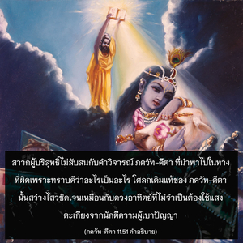

ดังนั้น เมื่อ อรฺชุน ทรงเห็นองค์กฺฤษฺณในรูปลักษณ์เดิมของพระองค์แล้วจึงตรัสว่า โอ้ ชนารฺทน เมื่อได้เห็นรูปลักษณ์คล้ายมนุษย์ที่มีความสง่างามมากนี้ บัดนี้ข้าตั้งสติได้แล้ว และได้กลับคืนสู่สภาพตามธรรมชาติเดิมของข้าพเจ้า



ณ ที่นี้คำว่า มานุษํ รูปมฺ แสดงให้เห็นถึงบุคลิกภาพสูงสุดแห่งพระเจ้ารูปเดิมที่มีสองกรอย่างชัดเจน พวกที่เยาะเย้ยองค์กฺฤษฺณประหนึ่งว่าพระองค์ทรงเป็นบุคคลธรรมดา แสดงให้เห็นถึงความโง่เขลาเบาปัญญาของตนเกี่ยวกับธรรมชาติทิพย์ของพระองค์ ณ ที่นี้หากองค์กฺฤษฺณทรงเหมือนกับมนุษย์ธรรมดาแล้วเป็นไปได้อย่างไรที่ทรงแสดงรูปลักษณ์จักรวาล ทรงแสดงรูปลักษณ์พระนารายณ์สี่กร ดังนั้น จึงได้กล่าวไว้อย่างชัดเจนมากใน ภควัท-คีตา ว่าผู้ที่คิดว่าองค์กฺฤษฺณทรงเป็นบุคคลธรรมดา และนำพาผู้อ่านไปในทางที่ผิดโดยอ้างว่า พฺรหฺมนฺ อันไร้รูปลักษณ์ที่อยู่ภายในองค์กฺฤษฺณเป็นผู้ตรัสบุคคลนี้กำลังกระทำผิดอย่างมหันต์ องค์กฺฤษฺณทรงแสดงรูปลักษณ์จักรวาล และทรงแสดงรูปลักษณ์ วิษฺณุ สี่กรจริง เมื่อเป็นเช่นนี้แล้วพระองค์จะทรงเป็นมนุษย์ธรรมดาสามัญได้อย่างไร สาวกผู้บริสุทธิ์ไม่สับสนกับคำวิจารณ์ ภควัท-คีตา ที่นำพาไปในทางที่ผิดเพราะทราบดีว่าอะไรเป็นอะไร โศลกเดิมแท้ของ ภควัท-คีตา นั้นสว่างไสวชัดเจนเหมือนกับดวงอาทิตย์ที่ไม่จำเป็นต้องใช้แสงตะเกียงจากนักตีความผู้เบาปัญญา